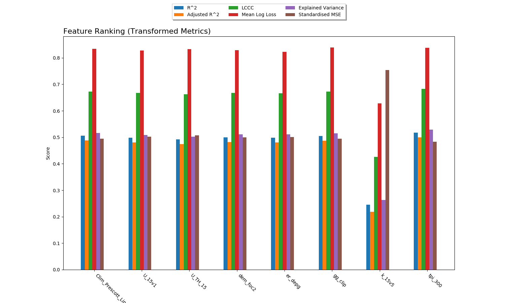
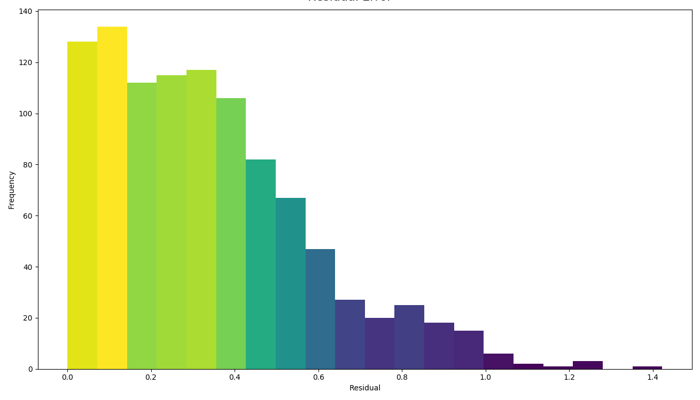

Workflows¶
UncoverML workflows are controlled by a YAML configuration file. This section provides some examples and explanations of different workflows, the required configuration, uncoverml commands and the produced outputs
There some example YAML files in the uncover-ml/configs directory to help you get started.
Learn and Predict¶
The most common task in UncoverML is using it train a model and then perform a prediction. This requires:
A config file with necessary parameters
A set of geotiffs containing covariate/feature data
A shapefile containing training targets
Config¶
An example of a learn/predict config:
learning:
algorithm: transformedrandomforest
arguments:
n_estimators: 10
target_transform: log
features:
- type: ordinal
files:
- directory: path/to/covariates/directory
transforms:
- centre
- standardise
imputation: mean
targets:
file: path/to/training/target/shapefile
property: Na_log
prediction:
quantiles: 0.95
outbands: 4
output:
directory: path/to/store/output
The learning block specifies the algorithm/model to train:
algorithm: the name of the algorithmarguments: a dictionary of keyword arguments specific to that algorithm. See models page for available algorithms and links to their documentation to understand what parameters are available for each algorithm.target_transform: this argument is specific to UncoverML and an addition to the algorithm’s base arguments. Target values will be transformed using this method before being passed to the algorithm’sfitandpredictmethods.identity: identity transform - does nothing to the data. This is the default option iftarget_transformis not provided.standardise: applies a standarisation transform.sqrt: applies a square root transform.log: applies a log10 transform.logistic: applies a logistic transform.rank: apply a RankGauss transform.kde: apply a KDE transform.
The features block contains the features/covariates to be used for
training and prediction:
type: UncoverML supports ordinal and categorical data, but they must be provided in separate sets and thetypemust be provided (if no type is provided, UncoverML will assume the data is ordinal).files: The location of the geotiffs. Multiple entries can be provided forfilesand can be of typedirectory,pathorlistdirectory: Path to a directory. All geotiffs within this directory will be loaded as features.path: Path to a geotiff file. This will be loaded as a feature.list: Path to a text file. Each line of the text file is a path to a geotiff and geotiff will be loaded as a feature.
transforms: Transforms to use for scaling features. Multiple transforms can be applied to each set of features specified.centre: applies a centre transform (demeans the data).standardise: applies a standarisation transform.log: applies a log10 transform.sqrt: applies a square root transform.whiten: applies a Whiten transform.onehot: performs OneHot encodingrandomhot: performs RandomHot encoding.
imputation: the imputer to use for filling missing values in the provided features.mean: mean imputation.gauss: Gauss imputation.nn: nearest neighbour imputation.
Geotiffs must be the same size and resolution, otherwise an exception will be raised.
Multiple feature sets can be specified for different types of data, or for applying different transforms:
features:
- type: categorical
files:
- path: path/to/categorical/feature
transforms:
- onehot
- type: ordinal
files:
- list path/to/feature/list.txt
transforms:
- standardise
imputation: nn
The targets block specifies the training targets to be used:
file: path to the shapefile containing training targetsproperty: name of the field in the shapefile to be used as training value
At least some of the targets in the shapefile must intersect with the provided features. Targets outside of the feature area will be ignored
The prediction block specifies what outbands to generate and the
quantile interval for producing upper and lower quantile maps:
quantiles: a value between 0 and 1 representing the prediction interval. E.g. ‘0.95’ means the predicted values will fall within the lower and upper quantiles 95% of the time.outbands: each band will be written as a separate geotiff file. For classification, the available outbands is equivalent to the available classes. For regression, the first outband is prediction and if the model provides them, the next are variance, lower quantile and upper quantile. Some specific models provide further options - refer the documentation for the specific model you are using. Theoutbandsnumber is used as the RHS of a slice, so providing ‘1’ for a regression will output prediction (0) and variance (1).
The output block directs UncoverML where to store learning and
prediction outputs.
directory: path to a directory to store the outputs. Will be created if it does not exist. All outputs are prefixed with the config file name.
Running¶
To run this workflow, first train the model:
uncoverml learn config.yaml
Once the command is complete, outputs will exist in the directory
specified in the output block.
For learning, these are:
rawcovariates.csv: a table containg the value from each covariate and the target value for a given point. This is before any scaling or transforms are applied.rawcovariates_mask.csv: a table representing the mask for each point, i.e. which coviarates are missing from which coordinates.transformed_targets.csv: a table containing untransformed target values in the first column and the transformed value in the other column.*.model: a Python binary file containing the trained model. It is not accesed directly but is used as part of the preidciton step.
Predictions can then be performed across the entire feature space:
uncoverml predict config.yaml
Upon completion, prediction maps will be written to the output
directory. There will be one map for each band requested as output in
the configuration file. The map will be named after the band,
e.g. prediction.tif for the main prediction band. Downsampled
versions of the maps will also be generated for use as thumbnails.
Model Validation¶
Validation can be performed during the training process to generate model performance metrics. UncoverML supports k-fold cross validation, out-of-sample validation, feature ranking and permutation importance.
Config¶
To perform validation, the validation block must be provided
in your config file. The usual parameters for learning must be provided
(see Learn and Predict).
validation:
feature_rank: True
permutation_importance: True
out_of_sample:
percentage: 0.2
shapefile: /path/to/shapefile
k-fold:
parallel: False
folds: 5
random_seed: 1
feature_rank: a boolean that turns feature ranking on or off.permutation_importance: a boolean that turns permutation importance on or off.out_of_sample: out-of-sample validation parameterspercentage: float between 0 and 1, the percentage of targets to withold from the training data to be used for post-learning validation.shapefile: path to a shapefile containing targets to be used in out-of-sample valiadtion.percentagehas priority overshapefile- if both are provided then the shapefile argument will be ignored.
k-fold: k-fold cross validation parametersparallel: a boolean that specifies whether folds are trained and predicted in parallel.folds: the number of folds to split training data into.random_seed: an integer used as the seed for the random number generator that splits folds. Using the same seed will produce determinstic fold splits.
Running¶
Model validation is performed as part of the training process. To perform model validation, run:
uncoverml learn config.yaml
Once complete, validation results will be in the output directory:
crossval_results.csv: A table of target values and corresponding predicted value for k-fold.crossval_scores.json: A dictionary containing the value for each metric for k-fold.featureranks.json: Dictionaries containing feature rank results. Theranksdictionary presents the most important feature by its impact on each metric (which feature caused the most degredation of the metric when excluded from training). Thescoresdictionary contains the corresponding value for each rank.permutation_importance.csv: The permutation importance results.oos_results.csv: A table of targets values and corresponding predicted value for out-of-sample validation.oos_scores.json: A dictionary containing the value for each metric for out-of-sample validation.oos_targets.shp: Ifpercentagewas provided as part of out-of-sample arguments, the withheld targets will be saved to this shapefile for reuse.
In addition to these, the ‘prediction’ column of rawcovariates.csv
will be filled with the corresponding prediction value generated
during cross-validation.
Diagnostics¶
UncoverML can generate diagnostic plots. These are controlled by
additional parameters in the output block:
output:
directory: path/to/output/directory
plot_feature_ranks: True
plot_intersection: True
plot_real_vs_pred: True
plot_correlation: True
plot_target_scaling: True
Covariate Correlation¶
This generates a correlation matrix showing correlation between provided covariates. The color/value of each square shows how strong the positive or negative correlation is:

To generate a correlation matrix, the learn command must be run
with plot_correlation set to True in the configuration.
Feature Ranking¶
The result of feature ranking can be plotted. This creates two plots. One is a grouped bar chart - each colored bar represents a metric, the Y-axis is the score of that metric and each group is a feature (AKA covariate):
The other plot is a series of curves. Each curve represents a metric, with scores on the Y-axis and covarites on the X-axis. Each inflection represents what happens to the score when the corresponding covariate is removed from the model:

To generate feature rank plots, the learn command must be run
with feature_rank set to True under the validation block
of the config, and plot_feature_ranks set to True.
Covariate Intersection¶
Covariate intersection can be plotted. These scatter plots, one for each covariate, show the corresponding covariate value for each target value:

To generate intersection plots, the learn command must be run
and plot_intersection must be True in the configuration.
Real vs. Prediction¶
A scatter plot showing the intersection between real vs. predicted values can be generated. This comapres the values predicted by the model to the actual target values, and is important for validating model. It includes several pieces of information. The points show the intersecting values. The 2D histogram in the background shows grouping of the points (the colorbar on the right-hand side codes the frequency of each grouping). The text in the upper-left shows the score from the metrics generated by cross-validation:

A histogram of residual error is also generated. This shows bins grouping the residual error between intersected points (i.e. the difference between a predicted value and the corresponding real value):
To generate a real vs. prediction plot, k-fold must be enabled
under the validation block of the config, and plot_real_vs_pred
must be set to True.
Multiprocessing and Partitioning¶
UncoverML supports parllelization using MPI and also supports partitioning for large datasets. When and how to use these depends on the task being performed.
Learning¶
When running learn, it can be beneficial to use multiple processors
to train folds for k-fold cross validation in parallel. For example,
if you have enabled crossval with 5 folds and set parallel: True in
the k-fold block, then you can train the folds in parallel using:
mpirun -n 5 uncoverml learn config.yaml
This will speed up the cross-validation process.
If not utilising parallel crossval, there is no benefit to using multiple processors. A model can only be trained on a single processor, so to avoid wasting compute resources, train models with 1 processor:
uncoverml learn config.yaml
# equivalent to `mpirun -n 1 uncoverml learn config.yaml`
An exception is when learning an enseble model. Examples are
bootstrapsvr and multirandomforest. These are ensembles of
several individual models. When training an ensemble model, it can be
beneficial to run with multiple processors as each processor can train
a submodel. Note that running with more processors than there are
submodels to train will waste compute resources as the remainder
(n_processors - n_models) processors will have no work to perform.
For example, if you were training a bootstrapsvr model with 100
models, and you were running on a single HPC node with 48 cpus, you
can run in parallel using:
mpirun -n 48 uncoverml learn config.yaml
This will greatly reduce the training time of an ensemble model.
Prediction¶
Prediction gains the most benefits from multiprocessing and partitioning. Because the model is already trained, prediction can be done by splitting up the feature space into chunks and distributing them to processors to speed up prediction. These chunks can then also be further partitioned and loaded sequentially on each processor to reduce memory usage.
While multiple CPUs will speed up prediction, partitioning will have an impact on speed, as it increases I/O overhead. However, it allows prediction on larger-than-memory datasets.
For example:
mpirun -n 48 uncoverml predict config.yaml -p 5
This command will split the feature data into 48 even chunks and
distribute it amongst the CPUs. Each chunk will then be split into
5 partitions (the -p 5 parameter) and loaded, predicted on and
written out sequentially, reducing memory usage.
Optimisation¶
UncoverML provides a framework for using scikit-learn’s GridSearchCV to perform hyperparameter tuning. This allows cross-validation to be performed with different combinations of parameters.
Note
Only some models are compatible with optimisation. This is because models must be structued in a way compatible with scikit-learn’s GridSearchCV. This involves:
having all arguments explicitly listed in the
__init__signature (no varargs)having the expected functions (
fit,predict, etc.)implemeting the
get_paramsandset_paramsfunctions defined by Base Estimator
Optimisable models are listed in the models section.
Config¶
An example config for performing optimisation on transformedrandomforest:
optimisation:
algorithm: transformedrandomforest
scorers: [r2, expvar, smse, lins_ccc]
hyperparameters:
target_transform: [identity, standardise, log, sqrt]
n_estimator: [10, 20, 50]
max_features: [auto, sqrt, log2]
min_samples_split: [2, 5, 10]
min_samples_leaf: [1, 5, 10]
max_depth: [10, 20, 100]
output:
directory: path/to/output/directory
algorithm: name of the algorithm to optimise.scorers: a list of metrics to consider when ranking parameter combinations.r2,expar,smseandlins_cccare the availble regression model parameters.accuracy,log_lossandaucare applicable to classifers.
hyperparameters: contains lists of values for various algorithm parameters - view the documentation for the algorithm to know parameters are available. Every permutation of the given parameters will be scored using cross-validation.
Running¶
Optimisation is run using:
uncoverml gridsearch config.yaml -n 10
The -n 10 is the number of parallel workers to use. Gridsearch
uses the joblib backend, so don’t use mpirun to execute it, but
rather set -n to the number of processors you have available.
The output will be in the output directory:
optimisation.csv: a table of gridsearch results. For details, see the documentation forcv_results_attribute in the sklearn docs.
Shiftmap¶
UncoverML has a shiftmap feature that generates a map of the
covariate shift in your feature space. ‘Covariate shift’ is the shifting
of covariate distributions across different areas.
The idea behind shitmap is to generate ‘dummy’ targets, equal in number to the provided training targets. These dummy targets are distributed randomly across the feature space.
The two sets of targets (dummy and real) are labelled ‘query’ and ‘training’ respectively. A logistic classifier is then trained on these targets and classification maps are generated.
Areas where the classifier can’t distinguish between the two classes (e.g. 0.4 - 0.6 certainty for one or the other class) means the covariate data in that area has a similar distribution to the provided training data. In theory, these are areas where the model can be extrapolated and will perform well, as the distrubtion is similar to the provided training data. Areas with a strong covariate shift (e.g. 0 - 0.4, 0.6 - 1 certainty for either class) may not be suitable for extrapolating the model due to differences in distribution between training data and feature data.
Running¶
Shiftmap requires a standard learning config and doesn’t require
extra parameters. To run:
uncoverml shiftmap config.yaml
Covariate shiftmaps will be written to the output directory:
shiftmap_generated_points.csv: a table of the randomly generated points which can be used for validation and debugging.shiftmap_query_0.tif: a map showing the likelihood of each pixel beloning to the ‘query’ class. Areas of uncertainty (0.4 - 0.6 for example) are areas with similar distributions to the training data.shiftmap_training_1.tif: same as above but inverted; shows the likelihood of each pixel belonging to the training class.most_likely.tif: a map showing which class each pixel is most likely to belong. This can be ignored as it does not help demonstrate the covariate shift, but is left for debugging purposes.
Target Search¶
UncoverML implements a novel targetsearch command. Targetsearch
is used to help find subsets of training points that are similar to
a particular study area.
For example, you might have a national dataset of geochem points and you want to predict the potassium content for a much smaller study area. Instead of supplying the entire geochem dataset, you can use target search to determine which points in the dataset are most similar to the study area (i.e. which points have a similar distribution of feature date) and these are the points are used in addition to the provided training targets for training the model.
Config¶
Target searching is performed by adding parameters to the learning
block of the config:
learning:
target_search: True
target_search_threshold: 0.8
target_search_extents:
xmin: 120
ymin: -20
xmax: 121
ymax: -21
algorithm: transformedrandomforest
arguments:
n_estimators: 10
target_transform: log
target_search: a boolean of whether or not to use targetsearchtarget_search_threshold: the likelihood threshold a training point must surpass to be included in found points (i.e. how similar a training points feature distribution is to the study area)target_search_extents: extents defining the study area. Target search will select points from the training targets that have a similar feature distribution to this study area.
Running¶
To select and return the targets, first run targetsearch:
uncoverml targetsearch config.yaml
In the output directory, there are three files:
targetsearch_generated_points.csv: a list of points that were randomly generated in the study area, used for validation and debugging.targetsearch_likelihood: the likelihood of each training target belonging to the study areatargetsearch_result.pk: a Python binary file containing the training targets that have surpassed thetarget_search_threshold.
Once the targets have been selected, they can be used in training a
model by passing the same config to the learn command:
uncoverml learn config.yaml
Learning will run as normal, with the addition that the targets selected
by target_search will be included with the provided training targets
and used to train the model.
Cropping¶
UncoverML has a built-in cropping function that is useful for a
variety of purposes. By providing a bounding box of xmin, xmax,
ymin, ymax, all geotiffs provided to the uncoverml command will
be cropped to this extent before processing takes place.
Original files will be maintained and the cropped versions are stored temporarily then removed by UncoverML on completion.
Config¶
Cropping is performed by providing the extents block in the config:
extents:
pixel_coordinates: False
xmin: 120
ymin: -20
xmax: 121
ymax: -21
pixel_coordinates: boolean indicating wheter to treat the given crop coordinates as pixels (True) or as coordinates in the CRS used by the covariate geotiffs (False). If using pixel coordinates, these start at 0 and extend to the width and height of the image, inclusive.xmin,ymin,xmax,ymax: coordinates of the crop box. If not provided or out of bounds of the covariate images, then the default bound of the covariate bounds is used respectively.
Running¶
Cropping applies to the learn, predict, shiftmap and
targetsearch commands of UncoverML.
Running learn with the above extents in the config will crop the provided covariates to that extent, and the model will be trained on the remaining data. Similarly, running prediction with the extents block will crop the covariates and only predict on the remaining data.
This is very useful for speeding up jobs or in situations where the data is too large for memory. It’s also convenient when providing covariates of different sizes. UncoverML doesn’t support this, but by setting the extents as the smallest intersecting area of the covariates, an intersecting stack of feature data can be generated and used for training and prediction.
Using cropping to perform parallel predictions¶
Another use is for running parallel prediction jobs. For large-scale jobs, particularly when using ensemble models and on HPC platforms, it can be beneficial to break up prediction into multiple jobs and launch them in parallel.
To achieve this, first train the model on your full dataset. Then create multiple prediction configs, each one predicting on a chunk of the data:
extents:
pixel_coordinates: True
xmin: 0
ymin: 0
xmax: 1000
ymax: 1000
output:
directory: path/to/output/directory
Repeat this, providing the extents for each chunk until the whole
dataset is covered. Once you have chunk1.yaml, chunk2.yaml
etc., submit them as individual prediction jobs:
uncoverml predict chunk1.yaml
Doing so for each chunk config.
Upon completion you will have multiple prediction maps prefixed with the config name, e.g. chunk1_prediction.tif. Using a GIS viewer or other program, you can then stitch the prediction chunks together.
Clustering¶
UncoverML supports k-means clustering.
Config¶
When providing a clustering block, learning, validation and
targets blocks don’t apply and are not required. features must
be provided for training and prediction and prediction block for
predicting the k-means model.
clustering:
file: /path/to/class_labels.shp
property: name_of_class_label_property
n_classes: 5
oversample_factor: 5
file: path to shapefile containg labels. This is optional. If provided then semi-supervised clustering is performed, other clutering is unsupervised.property: the name of the class label property in the shapefile. Only required if a shapefile has been provided and semi-supervised clustering is being performed.n_classes: the number of classes to cluster the data into.oversample_factor: controls the number of samples drawn as part of the initialisation step. More processors used will increase the total number of samples drawn. Consider values of 1 for more than 16 processors.
Running¶
uncoverml cluster config.yaml
will train and output the k-means model file.
uncoverml predict config.yaml
will produce a map showing which pixel each class is most likely to belong to.
Weighted Samples¶
Some models support a sample_weight parameter. Look at the
documentation of the fit method for the selected algorithm
to see if this is available.
Sample weights can be provided by creating a weight field in your target shapefile. Weights are integer values that signify the relative importance of a sample. Weights of 0 mean the sample will be excluded entirely.
Config¶
Weights are applied by providing the name of the weight field to the
targets block.
targets:
file: path/to/targets/shapefile.shp
property: training_field
weight_property: weight_field
Running¶
Run learning as normal:
uncoverml learn config.yaml
There will be a log info message stating ‘Sample weights are being provided to fit method’ when the model is trained. If the model does not support sample weights, then there will be a log info message ‘Model does not support sample weights, weights are being ignored’ and unweighted training will continue.
Prediction Mask¶
A crop mask can be provided when performing predictions. This mask will cause prediction to only predict and write values that have a certain mask value. This is useful for masking out no data areas such as the ocean, or limiting predictions to an area of interest to increase performance.
The geotiff must be the same size as the provided covariates. Cropping also applies to prediction masks.
Config¶
To supply a mask, add the mask block to your config:
mask:
file: path/to/mask.tif
retain: 1
file: path to the mask geotiffretain: value in the mask denoting which pixels to predict
Adding fields to output table¶
Any field in the target shapefile can be written to the rawcovariates.csv
output table. This can be helpful for validation and debugging, e.g.
including the type or category of the sample in the results.
Config¶
To include fields in the output table, add the write_to_csv
parameter to your targets block:
targets:
file: path/to/targets/shapefile.shp
property: training_field
write_to_csv: [type, site_id]
write_to_csv: list of names of shapefile fields to include in therawcovariates.csvoutput table.
Running¶
Run learn as normal and the fields will be included in the output
table:
uncoverml learn config.yaml
Resampling¶
UncoverML has a resample tool that allows a target shapefile to be
resampled based on value or spatial parameters.
Config¶
Resampling requires a targets block with additional resampling
parameters and an output block specifying a directory.
targets:
file: path/to/targets/shapefile
property: target_field_name
resample:
spatial:
rows: 10
cols: 10
bootstrap: False
output_samples: 1000
fields_to_keep: [type, site_id]
value:
bins: 3
bootstrap: True
interval: linear
fields_to_keep: [type, site_id]
output:
directory: ./resampling_out
file: path to the target shapefileproperty: name of the target observation fieldresample: the resampling argumentsspatial: arguments for spatial resampling -rows,cols: int, the number of rows and columns to dividethe shapefile area into. Each resulting cell is a bin.
bootstrap: boolean, whether to sample with replacement. If true, then duplicate samples are allowed, otherwise each value will only be sampled once at most.output_samples: int, the number of output samples. This is the total number, so the number of samples in each bin is equal to (output_samples // bins)). Ifbootstrapis false and there are not enough samples in a bin to fulfill the requested number, then all samples will be taken and the bin will be short of samples.fields_to_keep: by default, the only value preserved in the resulting resampled shapefile is the property specified byproperty. To keep additional fields, add them to this parameter.
value: arguments for value resampling -bins: the number of bins to divide samples into. -interval:linearorpercentile, the method fordetermining bin edges. If
linearthen bin edges will be taken at equally spaced intervals from the min to the max of the target values.E.g., if bins is 3 and the data range is 0 to 300, then the bins will be 0 to 100, 100 to 200 and 200 to 300.
If
percentilethen the bin edges will be the Nth percentile value of the target data, with the percentiles being the result of linearally spacing the number of bin edges between 0 to 1.E.g., if bins is 3, then the bins will cover from 0 to 33rd percentile, 33rd to 66th percentile and 66th to 100th percentile.
Running¶
To perform resampling, run:
uncoverml resample config.yaml
Output will be in the output directory, with the resampled shapefile in a subdirectory having the original shapefile name appended with ‘resampled’.
Covariate Diagnostics¶
UncoverML includes a covdiag command for convenience. This will
output some basic diagnostics for your covariates.
Running¶
Covdiag can be run on a single covariate:
uncoverml covdiag path/to/tif
Or on a directory. Adding -r flag will explore the directory
recursively, outputting diagnostics for all tiffs in all subdirectories.
uncoverml covdiag path/to/covariate/directory -r
By default, output is delivered to the console. To save to a textfile, use output redirection:
uncoverml covdiag /path/to/covariate/directory >> output.txt